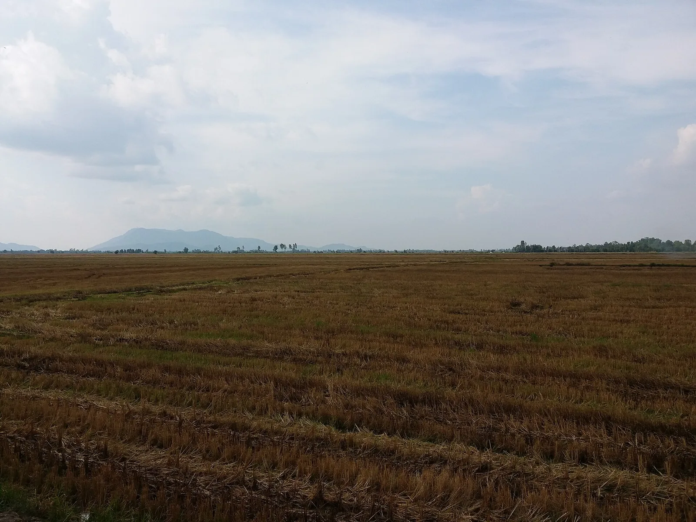
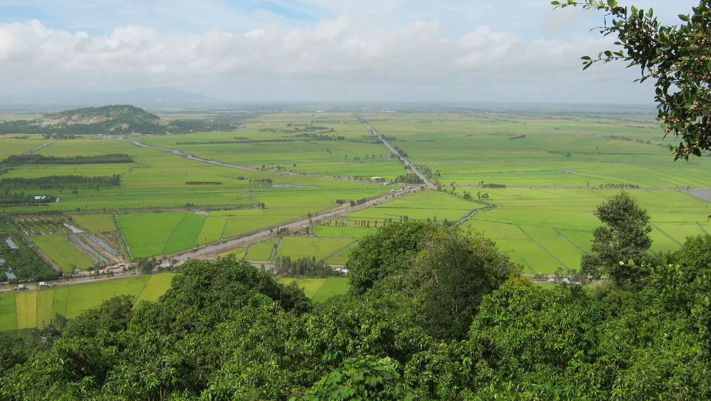
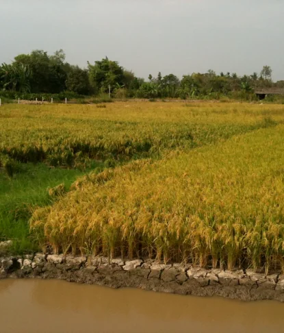

Hợp tác xã gom nhu cầu cùng ngày gặt. Chủ máy xem cụm ruộng trước khi nhận, hai bên xác nhận công việc.
Xem dịch vụGặt đúng vụ,
giá rõ từng ha

Ruộng nhỏ lẻ khó thuê máy đúng ngày. Gộp lại thì máy mới đến.
HTX gom nhu cầu của các thửa gần nhau, cùng ngày gặt. Chủ máy xem diện tích, đường vào ruộng và giá trước khi nhận.
Hệ thống gợi ý cụm. HTX kiểm tra và chốt trước khi chào việc.
- Dịch vụ
- Gặt, drone, làm đất
- Khu vực
- Đồng bằng sông Cửu Long
- Đơn giá
- Theo ha
- Nguồn giá
- Ghi trên từng dịch vụ
Chọn dịch vụ

Chủ máy thấy cả cụm trước khi nhận
- Diện tích và số thửa của cả gói
- Đường vào ruộng và điểm hạ máy
- Lịch dự kiến để sắp xếp máy và thợ
Từ thửa ruộng
đến nghiệm thu
Nông dân đăng thửa
Nhập thông tin ruộng và ngày gặt dự kiến. Nếu chưa biết vẽ ranh, có thể nhờ HTX hỗ trợ.
HTX gom và chào việc
HTX rà các thửa gần nhau, cùng ngày gặt, rồi chào gói cho chủ máy phù hợp.
Hai bên xác nhận
Sau khi chủ máy nhận gói, HTX liên hệ xác nhận lịch. Hai bên đối chiếu công việc khi nghiệm thu.

Nền tảng không giữ tiền
Nếu có tiền cọc, hai bên chuyển trực tiếp. Hệ thống chỉ ghi nhận thông tin do hai bên xác nhận, không xử lý khoản chuyển tiền.
Trước khi xác nhận, hãy đối chiếu đơn giá và hỏi HTX về các khoản phụ phí nếu có.
Đăng nhập